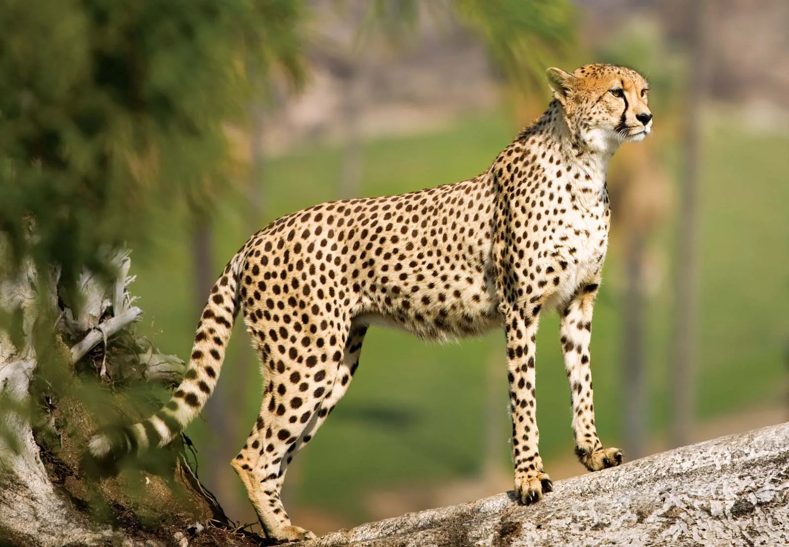

A bunch of random giberrish text and a lot of words but no content and a great story about nothing. A bunch of random giberrish text and a lot of words but no content and a great story about nothing. A bunch of random giberrish text and a lot of words but no content and a great story about nothing. A bunch of random giberrish text and a lot of words but no content and a great story about nothing.
Some new giberrish fresh off the press and straight into this page's hyper text media format thing whatever it's called it's great and I love it.
{
"value": 5,
"key": 8,
"hello dude": "hi"
}
def very_cool_python_function(numbers: List(int)):
for n in numbers:
print(f"{n} is an amazing number"")
Some more giberrish until I then show you an amazing image of a cheetah in it's natural habitat
This amazing beautiful fantastic cheetah looks out into the distance, searching for it's next prey. What would happen to the cheetah if it could not find it's prey? Would it perish? Or would it go vegeterian? This amazing beautiful fantastic cheetah looks out into the distance, searching for it's next prey. What would happen to the cheetah if it could not find it's prey? Would it perish? Or would it go vegeterian? This amazing beautiful fantastic cheetah looks out into the distance, searching for it's next prey. What would happen to the cheetah if it could not find it's prey? Would it perish? Or would it go vegeterian?